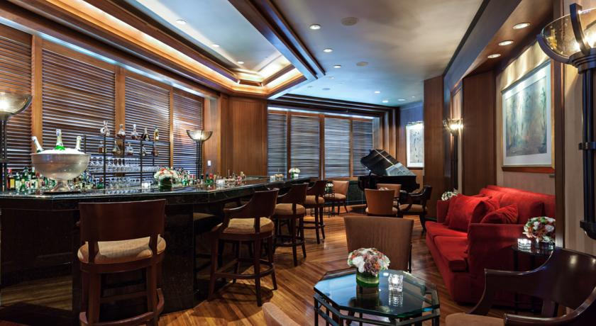
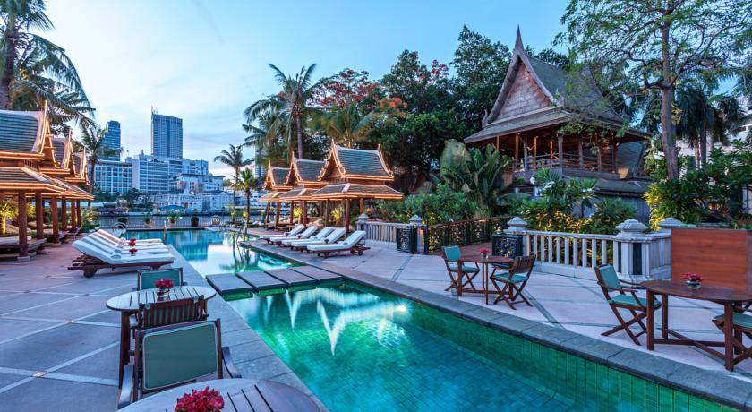
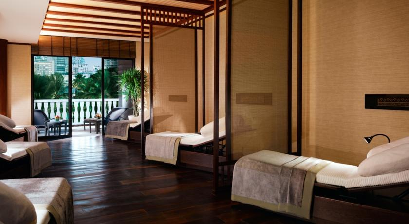
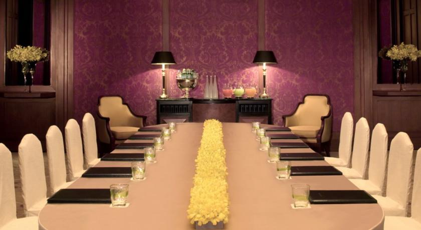
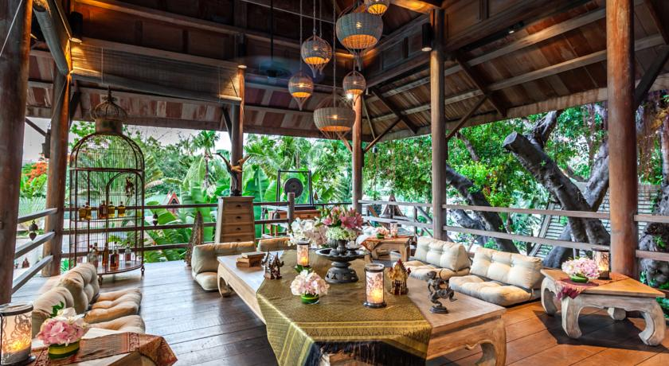

The Peninsula Bangkok






Отель Peninsula Bangkok расположен на берегу реки Чаопхрайя. К услугам гостей роскошные номера со всеми удобствами и видом на реку. В этом отеле, оборудованном для гостей с ограниченными физическими возможностями, имеется открытый бассейн и фитнес-центр. Во всех помещениях предлагается бесплатный Wi-Fi.
Гостям предоставляется бесплатный 5-минутный трансфер на пароме до станции надземного метро Saphan Taksin. Международный аэропорт Суварнабхуми находится в 45 минутах езды от отеля Peninsula, а Большой дворец и храм Ват-Арун - в 20 минутах езды.
В номерах в вашем распоряжении гардеробная, диван и гостиная зона, а также шторы с электронным управлением, декоративная подсветка и телевизор с плоским экраном и кабельными/спутниковыми каналами. В собственной ванной комнате с ванной и душем предоставляются бесплатные туалетно-косметические принадлежности. Ежедневно в номер доставляют корзину с фруктами.
Также гости могут посещать спа-салон, сауну и пользоваться услугами бизнес-центра, обмена валюты, пункта проката автомобилей и прачечной. Сотрудники туристического бюро и билетной кассы помогут вам заказать экскурсии и поездки.
В ресторане The Lobby сервируют завтрак, обед и ужин. В стильном ресторане Mei Jiang на обед и ужин предлагаются превосходные блюда кантонской кухни. В ресторане Thiptara, оформленном в старинном тайском стиле, можно отведать за ужином аутентичные деликатесы тайской кухни, любуясь видом на реку.
The Peninsula Bangkok — принимает гостей с 28 июня 2012
Номеров в отеле: 370, Сеть отелей: The Peninsula Hotels